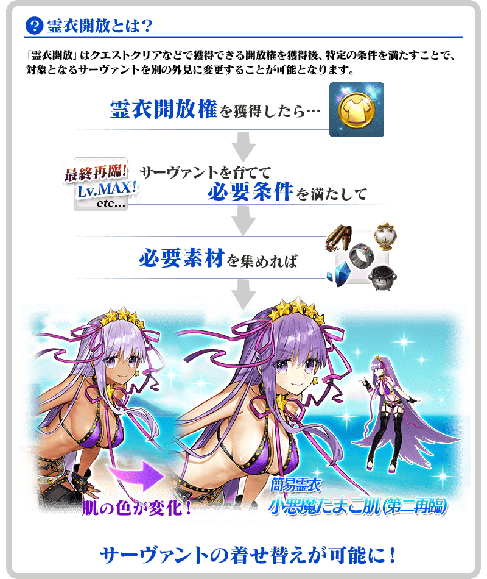
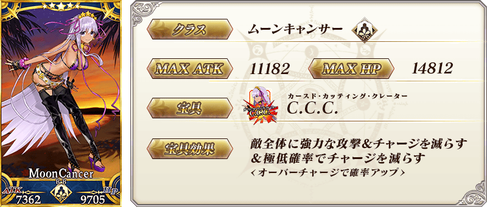
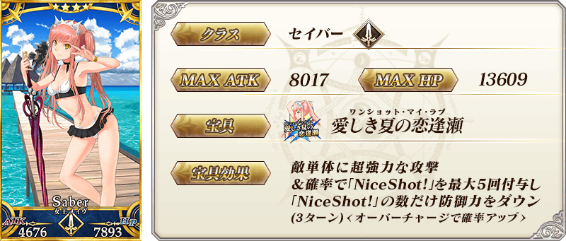
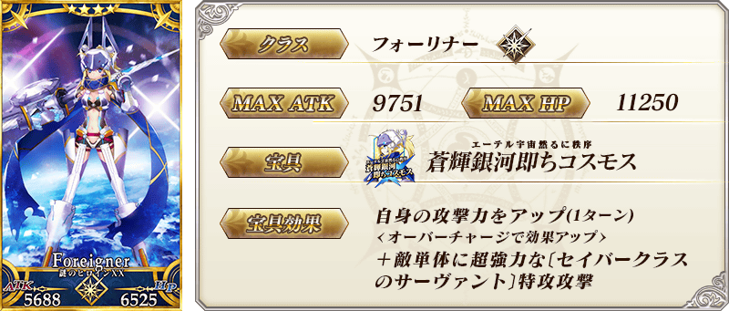
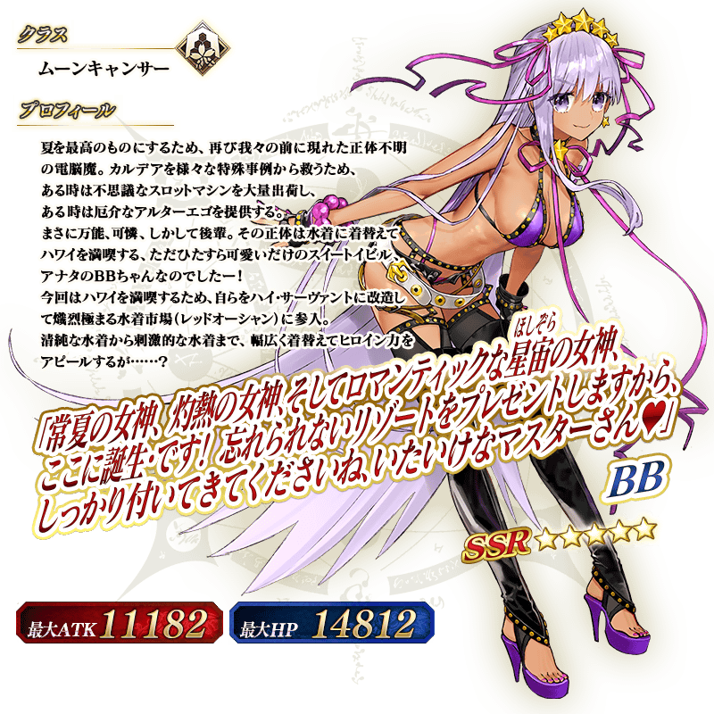
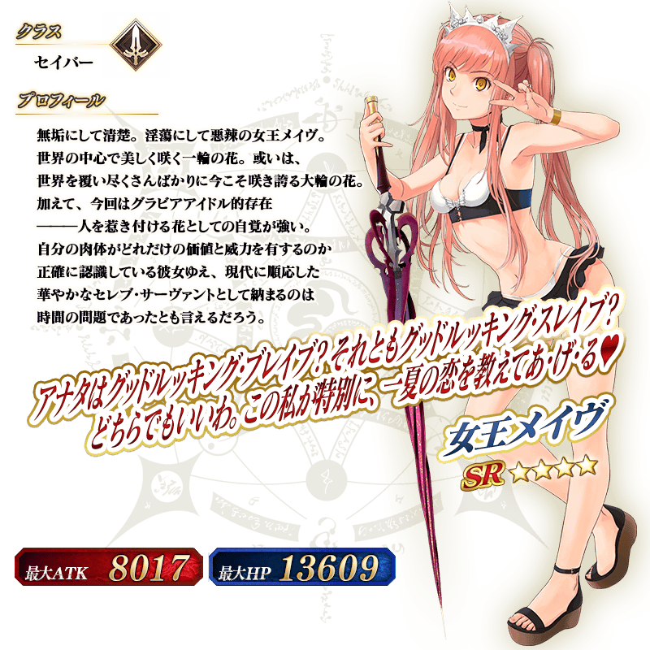
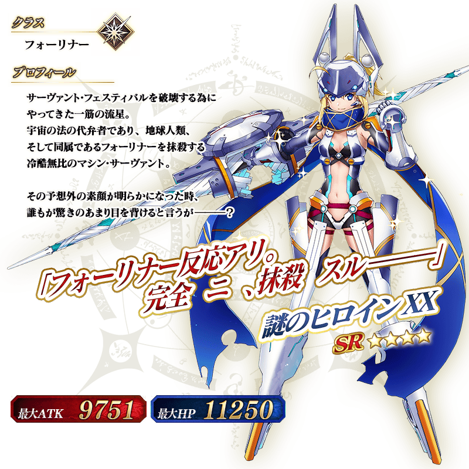

◆「從者★慶Pick Up3召喚(每日交替)」期間◆
期間:2018年8月16日(四) 22:00～8月29日(三) 11:59
舉辦期間限定「從者★慶Pick Up3召喚(每日交替)」！
「★5(SSR)BB」「★4(SR)女王梅芙(Saber)」「★4(SR)謎之女主角XX(Foreigner)」的3位以期間限定登場！
「★4(SR)女王梅芙(Saber)」「★4(SR)謎之女主角XX(Foreigner)」以每日交替Pick Up，「★5(SSR)BB」常駐Pick Up！
※BB、女王梅芙(Saber)、謎之女主角XX(Foreigner)在Pick Up期間結束後不會追加到故事召喚。
※請注意「從者★慶Pick Up3召喚(每日交替)」做為每日交替，「★4(SR)女王梅芙(Saber)」「★4(SR)謎之女主角XX(Foreigner)」就算是Pick Up期間中也有不會被抽出的日子。
詳情請在聖晶石召喚畫面左下的召喚詳細確認。
另外，「從者★慶Pick Up1召喚(每日交替)」限定概念禮裝「★5(SSR)エメラルド・フロート」「★4(SR)疾風怒濤」「★3(R)オールナイト・フィーバー」與「從者★慶Pick Up2召喚」限定概念禮裝「★5(SSR)ヒーロー・オン・ザ・ビーチ」「★4(SR)サンセット・ジャム」「★3(R)ライティング・ハイ」也以期間限定Pick Up！
裝備上述6種限定概念禮裝的話，，會提升在期間限定活動「從者夏日慶！」中活動専用道具的掉落獲得數。
※「★3(R)オールナイト・フィーバー」「★3(R)ライティング・ハイ」在Pick Up期間中，也能在友情點數召喚獲得。
※請注意自友情點數召喚抽出「★3(R)オールナイト・フィーバー」「★3(R)ライティング・ハイ」在自動變還設定登錄★3(R)概念禮裝的情況，會變成自動變還的對象。
Pick Up期間中，期間限定Servant、期間限定概念禮裝的出現機率提升！
10次召喚中確定1張★4(SR)以上和確定1位★3(R)以上的Servant！
※確定★4(SR)以上包含Servant和概念禮裝。
| 每日交替Pick Up期間 | 每日交替Pick Up內容 |
|---|---|
| 8月16日(四) 22:00～ 8月17日(五) 22:59 |
BB 女王梅芙(Saber) 謎之女主角XX(Foreigner) |
| 8月17日(五) 23:00～ 8月19日(日) 22:59 |
BB 女王梅芙(Saber) |
| 8月19日(日) 23:00～ 8月21日(二) 22:59 |
BB 謎之女主角XX(Foreigner) |
| 8月21日(二) 23:00～ 8月23日(四) 22:59 |
BB 女王梅芙(Saber) 謎之女主角XX(Foreigner) |
| 8月23日(四) 23:00～ 8月25日(六) 22:59 |
BB 女王梅芙(Saber) |
| 8月25日(六) 23:00～ 8月27日(一) 22:59 |
BB 謎之女主角XX(Foreigner) |
| 8月27日(一) 23:00～ 8月29日(三) 11:59 |
BB 女王梅芙(Saber) 謎之女主角XX(Foreigner) |
※請注意會以每日交替變更Pick Up的Servant。
※請注意BB被抽出對象為★5(SSR)。「★4(SR)BB」不會被抽出。
做為期間限定活動「從者夏日慶！」的關卡報酬，2種「★5(SSR)BB」的靈衣開放權登場！
本次追加的BB的靈衣是只有外觀的變化，語音沒變化的「簡易靈衣」。
通過在2018年8月16日(四) 22:00更新所追加主線關卡後可得到「簡易靈衣:小悪魔たまご肌(第二再臨)」等2種靈衣開放權！
另外，BB的靈衣開放權只限「從者夏日慶！」舉辦期間才能取得。
想開放新追加「★5(SSR)BB」的靈衣的話，除了靈衣開放權外必須再加上一些開放條件。
請注意未持有「★5(SSR)BB」的情況，還是能入手靈衣開放權，但無法進行靈衣開放。

※「靈衣開放」後自動切換戰鬥角色和圖示。若想回到「靈衣開放」前的狀態和變成其他再臨階段的情況，可自Servant詳細畫面變更。
※語音與「靈衣開放」前的狀態相同。
※「靈衣開放」只變更Servant的外觀，職階和能力等並無變化。

「靈衣開放」可自強化畫面選擇。


※上述的「★5(SSR)BB」的卡面為靈基再臨第2階段的圖片。

※上述的「★4(SR)女王梅芙(Saber)」的卡面為靈基再臨第2階段的圖片。

※上述的「★4(SR)謎之女主角XX(Foreigner)」的卡面為靈基再臨第2階段的圖片。

 |
★★★★★SSR |

 |
★★★★★SSR |
 |
★★★★SR |

 |
★★★★SR |

 |
★★★R |

 |
★★★R |


※上述介紹Servant「★5(SSR)BB」的立繪為靈基再臨第2階段。

※上述介紹Servant「★4(SR)女王梅芙(Saber)」的立繪為靈基再臨第2階段。

※上述介紹Servant「★4(SR)謎之女主角XX(Foreigner)」的立繪為靈基再臨第2階段。

介紹女王梅芙(Saber)、謎之女主角XX(Foreigner)的寶具演出！
在「Fate/Grand Order」官方網站內的公告中，公開了「★4(SR)女王梅芙(Saber)」「★4(SR)謎之女主角XX(Foreigner)」的寶具演出。敬請確認。
關於可入手活動限定Servant「★4(SR)貞德〔Alter〕(Berserker)」期間限定活動「從者夏日慶！」和期間限定「從者★慶Pick Up1召喚」、期間限定「從者★慶Pick Up2召喚」詳情，請自下述橫幅確認。